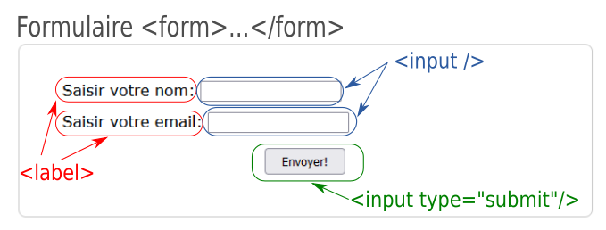

La création d'un formulaire se fait avec les balises <form> et </form>. Entre ces deux balises, on ajoutera des balises de champs de saisie exposées ci-après.
La balise form va contenir des attributs qui modifient le comportement du formulaire. Les deux attributs principaux sont :
Un champ de formulaire se crée avec la balise <input>. Cette balise peut contenir différents attributs dont l'attribut type qui va lui donner une fonction et une apparence particulière. Parmi ces types, on retrouve:
Chaque champ de saisie est accompagné d'un texte qui indique la saisie attendue. Ce texte est placé entre les balises <label> et </label>. Ce labelt précède ou suit le champ de formulaire.
Le formulaire ci-dessous est un exemple simple composé de 2 champs de saisie de texte.
le code html de ce formulaire est le suivant:
Vous trouverez de la documentation sur le site de la fondation Mozilla.
Le formulaire proposé sur la page web suivante dispose d'un formulaire avec traitement. Cela signifie que l'attribut action a une valeur désignant un fichier capable de traiter les données envoyées.
Le traitement des données se fait par un langage de programmation installé sur le serveur. Il en existe plusieurs, dont python, mais le langage utilisé ici est PHP. Ce langage PHP, assez différent de python pour la syntaxe, est orienté pour le WEB.